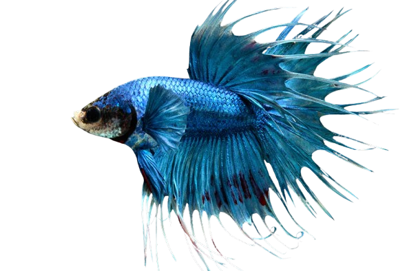
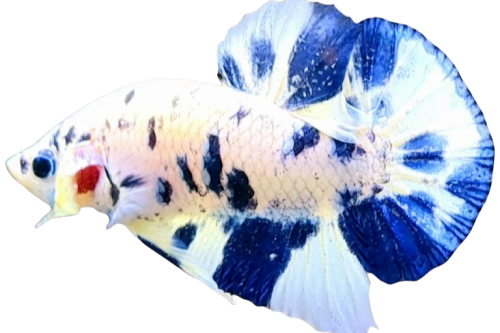
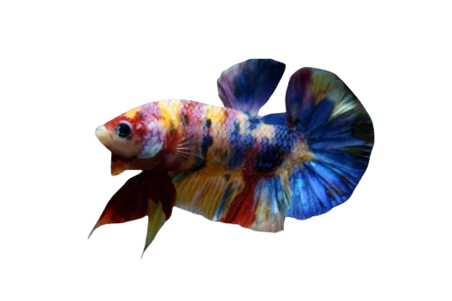
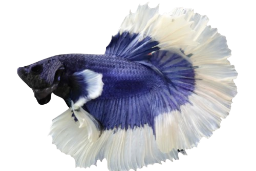
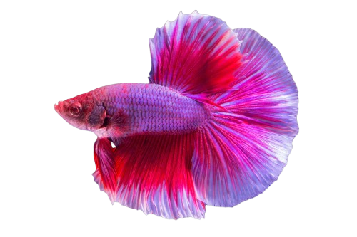
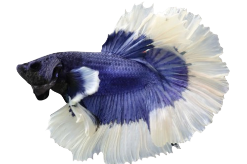
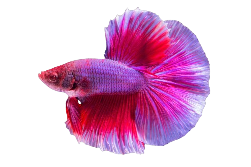

Cupang Shop
Cupang Mow
IDR 100K
Betta Plakat
IDR 120K
Betta Halfmoon
Cupang Mow
Cupang Mow adalah Toko cupang yang berada di bandung dan bersaing dengan pasaran ikan hias dibandung
Kualitas
Kualitas ikan cupang di Cupang Mow tidak kalah bagus karena perawatan yang sangat diperhatikan sehingga menghasilkan cupang berkualitas tinggi.
Garansi
Garansi Ikan cupang Di Cupang Mow ketika cupang stres dan mati, akan digaransikan 1x24 Jam.
Lokasi
Anda bisa mengunjungi Cupang Mow di Kota Bandung tepatnya Di Pusdai.
Gallery
   


